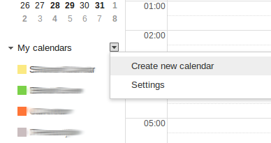

ICal instructies
Uw iCal wordt gemaakt en kan over een ogenblik gedownload worden via de link hieronder.
De makkelijkste manier om het bestand te gebruiken, is een nieuwe kalender te maken en het bestand daar op te laden. In Gmail doet u dat zo:
- Maak een nieuwe kalender door op de link 'Create new calendar' te klikken naast de 'My calendars'-titel. Vul de instellingen aan.
- Klik daarna op het kleine pijltje naast 'Other calendars' en kies 'Import calendar'. Geef het gedownloade bestand aan. Gmail voegt alle ophaalbeurten to aan de kalender.

 Uw iCal wordt aangemaakt...
Uw iCal wordt aangemaakt...